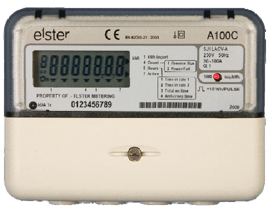
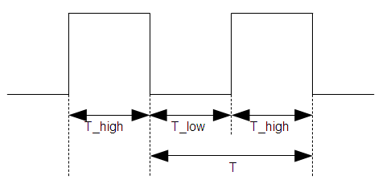
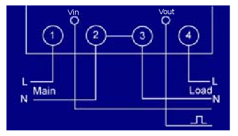
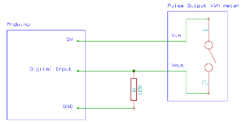

Reading pulses from meters with pulse outputs..
Last updated: November 2010
Authors: Glyn Hudson, Trystan Lea
A note on what this document covers
Although a wealth of information about pulse counting is available, this document deals with counting pulses from as many as 12 sources, using a continuous sampling and direct port manipulation (vice interrupt driven) Arduino sketch.
When counting pulses from only one or two meters, it's best to use the interrupt method. There are only two interrupt pins on the Arduino, if you wish to count pulses from more than two sources then please read on!
How to interface with wired / switched pulse outputs is discussed also.
Introduction
Many meters have pulse outputs, examples include: single phase and three phase electrical energy meters, Gas meters, Water meters.
The pulse output may be a flashing LED or a switching relay (usually solid state) or both.
In the case of an electricity meter, a pulse output corresponds to a defined amount of energy passing through the meter (kWh/Wh). For single-phase domestic electricity meters (e.g. the Elster A100c) each pulse usually equals one Wh (1000 pulses per kWh). With higher power meters (often three-phase), each pulse corresponds to a greater amount of energy e.g. 2, or even 10, Wh per pulse.
Example meter

What is a pulse?

Figure 1
Figure 1 illustrates a pulse output. The pulse width T_high varies depending on the meter. Some pulse output meters allow T_high to be set. T_high remains constant during operation. For the A100c meter T_high is 50ms. The time between the pulses T_low is what indicates the power measured by the meter.
Calculating Energy
For the A100c meter, each pulse represents 1/1000th of a kWh, i.e. 1 Wh, of energy passing through the meter.
Calculating Power
3600 seconds per hour = 3600J per pulse i.e. 1 Wh = 3600J
therefore, instantaneous power P = 3600 / T where T is the time between the falling edge of each pulse.
Optical pulse counting: Flashing LEDs
Many electricity meters do not have pulse output connections or the connections are not accessible due to restrictions imposed by the utility company. All modern meters have an optical pulse output LED. In such cases an optical sensor can be used to interface with the meter.
The red pulse-output LED can be seen in the A100c picture above. To detect the pulses from the LED, you need a light sensor. There is a wealth of documentation on the internet on using an Arduino to detect pulsed LED output.
- An article by AirSensor: Arduino Electricity Datalogger which uses the TSL261 or TSL257 Light to Voltage sensor, Glyn has found the TSL257 Light to Voltage sensor to be best for detecting LED pulses from a Reporter 5193B meter (see notes on optical sensors below).
- An article by Eric Sandeen Energy Monitor Proof of Concept using an Axman photoreciever
- An article by Ken Boak: Using an Arduino to measure gas consumption
Notes on optical sensors (results of initial tests)
The TLS261 photo diode was also tested. Since this sensor is IR it is not affected as much by ambient light. Was able to detect pulses from a bright LED, but not from the Reporter 5193B meter.
Wired / Switched output pulse detection
Many meters also have wired / switched pulse outputs. Many have connection diagrams similar to this one that comes with the A100c. The two smaller holes are the pulse output connections. I have added Vin and Vout labels to make it a little clearer. Vin is provided by an external power supply. Vout is the meter output created by toggling an internal solid state relay (like a switch between Vin and Vout)

Wired / Switched output supply voltage
From what I understand, 24V is a fairly standard supply for such meter systems, but other voltages can usually be used. Meters often have a fairly wide pulse output supply voltage range of 3 to 35V. So the 5V supply from an Arduino could be used. Higher voltages are desirable when there is more noise in the environment and the cable runs are longer.
Safety
Watch out for mains connected pulse outputs: Make sure your meter's pulse output is not connected to the high voltage mains (within the meter). Some meters have one of the pulse output connectors connected to neutral. If your meter is one of these you will need isolation circuitry to interface with an Arduino.
Live wire proximity: The pulse outputs are usually very close to live wires, so watch out for those too!
Circuit
Pulse output meter to Arduino connection diagram:

The 10k resistor keeps the digital input at GND (digital level 0) when the pulse output 'switch' is open.
Further reading
Thanks to Jerry for the links and comment below.
http://www.btinternet.com/~jon00/electmon.shtml
http://www.arduino.cc/cgi-bin/yabb2/YaBB.pl?num=1276096046
Single optical pulse counting using a JeeNode board and a Hope RFM12 RF module:
http://jeelabs.net/projects/cafe/wiki/Electricity_consumption_meter
Re: Introduction to pulse counting
The code is the most important part.
How could you forget to post it?????????????????????????????????
Re: Introduction to pulse counting
Seeeduino Stalker 168 ... so then you just connect this to the arduino mega..so to connect with the display if i opt to use to read the flash led...or there would be any need of other programming in order to connect???
Re: Introduction to pulse counting
Interesting, didn't know you had a pulse-reading page too ;)
I did something like this, see http://sandeen.net/wordpress/?p=227 - I used an interrupt-driven sketch, it's on that blog post, and probably has some bugs. I used a Fairchild QSE156 photodetector to drive it, it's all nice and self-contained. Mouser has them. When I went solar, though, my new net meter only has a pulse in debug mode. :( So now I'm back to "mains non-invasive 3.0" ;) It's a lot more effort, sadly.
Re: Introduction to pulse counting
yes good old pulse counting :) the only problem with it is it seems to be harder to get frequent and accurate reading for power as it requires timing the pulses accurately, although the interrupt method is better for that, its just a pain that the arduino only has the 2 interrupts. I will add your link to the page, thanks
Re: Introduction to pulse counting
LED pulse count and interval timing works well.
I've used a PIC, photo diode and RF transmitter with good success for flashing LED power measurement. My system counted pulses and also the time interval between each pulse to a high accuracy, and sent this information back to the receiver. Sending a rolling pulse count gave tolerance of lost messages and allowed the frequency of messages to be throttled, and the measurement of the interval between pulses allowed for accurate instantaneous usage readings.
Re: Introduction to pulse counting
Lots of people have done this. It looks like most use a photodiode or phototransister to detect the LED pulses that many electric meters emit. See, for example, http://www.btinternet.com/~jon00/electmon.shtml and http://www.arduino.cc/cgi-bin/yabb2/YaBB.pl?num=1276096046 .
It seems that usually one pulse corresponds to 1 or 1.25 kw.
Some electric meters don't emit readable pulses. If they have a rotating aluminum disk with a black line on the edge, rotation can be detected with combination laser or LED in combination with a photodetector. One rotation usually means 7.2 kw, but the value will be stated on the face of the meter.
There are even commercial products like the Black and Decker Energy Monitor that have a device that does either LED pulse or disk rotation detection, and sends the counts wirelessly to a display. They have a page that explains which meters are compatible and which aren't, at http://www.blackanddecker.com/energy/PowerMonitorCompatibility.htm?WT.mc...
These are available for under $100. If someone could figure out a way to intercept the wireless signal from one of these, or get their display to output data to another device, it could be useful.
Meters that don't have LED pulse output, or rotating disk, but that have a mechanical odomoter-style readout, often have a reflective circle inside the 0 or 6 on the first dial. Some people have found that this can be optically detected as it goes around. This approach can also work with some gas and water meters. Here's an example of one person that did this with an Arduino, with parts list and code, http://blog.richard.parker.name/2009/04/25/how-to-build-a-web-connected-...
Many water meters have a strong rotating magnet in the meter body that is magnetically coupled to the usage counter. Rotation of the magnet can be detected with a reed switch or Hal-effect sensor. See http://www.edcheung.com/automa/water.htm
Other meter types with rotating dials often have a magnet embedded in one of the dial shafts, which might be detectable as it spins around.
Less likely to be successful is optically detecting the spin of the little pointers on a rotating dial.
Some people have even played with trying to intercept the radio transmissions of various types of meters, with limited success.
There are a couple limitations to all these approaches.
One, the utility company tends to frown upon unauthorized equipment attached to their meters. Their field staff has no way of knowing whether your sensor will interfere with the meter or is some attempt to defraud the utility. I read one story about someone with one of the Black and Decker units, who had the unit removed, broken, and thrown away, and received a bill for several hundred dollars for a field service call.
In some countries, utilities are required to provide customer-readable LED pulse outputs on their meters.
Secondly, what is being measured with all of these approaches is the output of the meter, not the actual usage. If the meter is inaccurate, the data won't be reliable. This happens more than the utility companies like to admit. An independent reading of usage, for example with a Wattnode or Brultech ECM-1240 for electricity, can be more flexible and provide verification of meter and billing accuracy.
Thirdly, in many cases the utility company already has data in sufficient detail for many purposes, but perhaps just won't share it. My gas and electric service is provided by the same company, which has installed "smart" meters throughout their territory. Every 15 minutes, the electric meter sends the current reading to the utility over a mesh radio network. The gas meter sends its reading once an hour. The utility stores all the readings. They won't make the data available to residential customers. Commercial customers can get access for a small fee. I've actually thought about switching to a commercial tariff just to get access to the data. While not as good as real-time readings every second or minute, it would provide enough granularity to correlate usage with the weather, time of day, and similar factors.
Some utility companies do share meter data with all their customers, although it might be a daily total instead of the hourly or more frequent readings they actually have.
A few utilities make the data they have available for specific customers through services like Google Powermeter or Microsoft Hohm.
Re: Introduction to pulse counting
Thanks Jerry for the info and taking the time to write! Interesting to hear about the rotating magnet type used in some water meters, didnt know about those and thanks for the links I will add those to the page.
Marcel and Apoorva Garg: Have a look at the links Jerry has posted and also another link thats worth looking at: Using an arduino to monitor gas by Ken Boak: http://sustburbia.blogspot.com/2009/11/using-arduino-to-monitor-gas.html
Thanks Apoorva Garg for the offer of contribution, if you would like to document your implementation here, that would be most welcome. The photodiode/transitor method is certainly something I would like to try sometime.
Re: Introduction to pulse counting
I also thought on the same lines as Michael suggested, putting a photo-diode or LDR in front of the blinking LED and measure the energy in a non-intrusive manner. I'm sure this can be done, as we have built similar proximity sensors for robots.
Actually we started this when we tried to address the problem faced while doing automated meter reading(AMR) in India, the protocol on which the electronic meters exchange data (Over the optical port) was a proprietary one, therefore it was difficult to make your own custom solution for reading the data from meter. These LDR/Photo-diode based solution were suggested as a possible solution.
I'm still interested in doing this project and would take it up in sometime. Also if you guys are interested in doing this, let me know if there is a way in which I can contribute.
Thanks
Re: Introduction to pulse counting
I've been thinking about this for a little while and was thinking about using a photodiode sat in front of the flashing LED on the meter. That way I'm not having to touch anything inside the meter - which apart from being a little hazardous (!) wouldn't probably go down well with my electricity supplier!
Any thoughts?
[m]